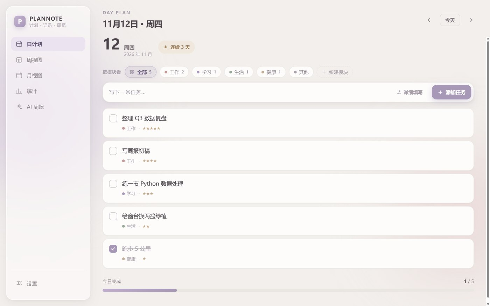

Selected work 04 / PlanNote
一个自己写给自己用的计划本，后来重做成能装进手机的网页应用。每天随手记一句，周五按设定的格式自动出周报。

最早那版是 Python 写的桌面程序，自己用没问题，但只能在装了 Python 的那台电脑上打开。想发给别人得打包成 exe，Windows 会弹安全警告，界面也是系统默认控件的观感。要把它放进作品集，得先解决别人点开就能用这件事。
于是把它重写成纯前端网页应用，做成以后目标很明确，自己也能继续用，面试官打开链接就能看到完整产品。
自写了一套无头浏览器的端到端测试，覆盖起点、自定义项目、按项目出周报、规则是否真生效、真实模型调用和配置保全，45 项断言全部通过。线上另跑了 10 项验收，检查介绍页渲染、5 张配图、安装配置、离线缓存、跳转和新访客空数据状态。
测试也抓出过真实问题，比如周报选了模块却仍发出全部记录、连续生成时提示条堆叠压住正文，都已修掉。整个过程在一次性浏览器环境里跑，不碰日常数据。
线上地址已经能直接打开，日、周、月、统计、自定义模块、AI 周报、备份与深色模式都可用，桌面和手机端都验证过。代码以 MIT 协议开源，项目说明、视觉打样和五张真实界面截图都放在这个站里。
KIANNA · PORTFOLIO / 本页只讲项目经过与成果，不含本地路径、密钥或个人数据